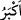
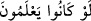
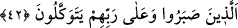

bir yere hicret ederse, cennet o kimseye hak olur. Artık o kimse, atası Allah’ın dostu
İbrâhim (a.s.)’ın ve peygamberi Muhammed (s.a.)’in refîki olur.”[148]
“Onları dünyâda güzel bir şekilde yerleştireceğiz.” Burası Medine-i Münevvere’dir.
Medîne halkı onları ağırlamışlar ve onlara yardım etmişlerdir.
“Eğer bilirlerse” yâni hicret karşılığı olarak kendileri için hazırlanan “âhiretin
mükâfâtı elbette” dünyâda kendilerine hemen verilenlerden “daha büyüktür.”
el-Medârik’te der ki: “
” kelimesinde vakfetmek vâciptir; Çünkü “
eğer
bilirlerse” ifâdesinin cevâbı hazfedilmiştir. “Eğer bilirlerse” ifâdesi kafirler
hakkındadır. Yâni onlar, Allah’ın bu muhâcirlere iki dünyânın hayrını vereceğini bilmiş
olsalardı, dinde onlara muvâfakat ederlerdi. Bu ifâdenin hicret eden mü’minler
hakkında olması da mümkündür. Bu takdirde mânâ şöyledir: O muhacirler müşâhede
eder gibi bilmiş olsalardı, daha fazla mücâhede ve sabır gösterirler ve ölümü
severlerdi. Çünkü haber muâyene (gözle görme) gibi değildir.
42. (Onlar) sâdece Rablerine tevekkül ederek sabredenlerdir.
Muhâcirler “sâdece Rablerine tevekkül ederek” devamlı olarak bütün işlerini ona
havâle ederek başkasından yüz çevirip sâdece ona bağlanarak “sabredenlerdir” yâni
vatanları olan Allah’ın haram beldesi Mekke’den ayrılığa sabredenlerdir. Allah’ın
haram beldesinin sevgisi bütün kalplerde yer ettiğine göre, doğumları orada olan bir
kavmin oraya karşı sevgisi nasıl olabilir?!
Rivâyet edildiğine göre Peygamber (s.a.) Medine’ye hicret için yola çıkınca, geriye
dönüp Mekke’ye baktı, ağladı ve: “Vallâhi, senden ayrılıyorum. Biliyorum ki, sen,
beldelerin Allah katında en sevimli ve en değerli olanısın. Ehlin beni senden
çıkarmasalardı, çıkmazdım.” buyurdu.[149]
Hemmâm der ki:
Ey deveci, acele etme ki ayağım çamurda
Boynumda onun zülfünden bir halka var
Beni acele ettirme ki yürümeye kudretim yok
Dostların menzilinden taşra olmak zor
Âkıbet dostların sohbetinden ayrılmak olunca
Kimseyle alâka kurmayan kimse akıllıdır
İşte böylece onlar vatanlarından ayrılığa, kâfirlerin şiddetli eziyetlerine karşı
koymaya ve Allah için canlarını fedâya ve benzerlerine sabrettiler.